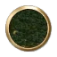
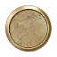
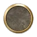
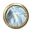

文明5在线百科
资源
资源主页
奖励资源
花岗石
历史遗址
绵羊
牛群
香蕉
小麦
野鹿
野牛
隐藏历史遗址
鱼群
战略资源
铝
马
煤
石油
铁
铀
奢侈资源
白银
宝石
赤铜
瓷器
大理石
丁香
柑橘
红酒
胡椒
黄金
鲸鱼
可可
毛皮
棉花
螃蟹
染料
肉豆蔻
食盐
丝绸
松露
香料
象牙
薰香
蔗糖
珍珠
珠宝
产出:
+1
启用条件:
可出现地形:




开发设施:
石油
游戏信息:
后期强力单位使用。
历史信息:
石油是一种在世界各地都被发现有或多或少储量的液体燃料。尽管有些文明早在四千年前就用它制造沥青和石脑油或者燃烧作为光源，石油的现代使用开始于1857年在法国阿尔萨斯建立的现代精炼厂。大约同时在欧洲各地和北美开始钻井。20世纪早期由于轮船，飞机，汽车内燃机的使用，石油被大量需求。如今许多国际政治事务被富油国家和贫油国家之间持续增长的紧张关系所驱动。记住石油是一种战略资源，因此它会被消耗用来建造相关的单位和建筑物。